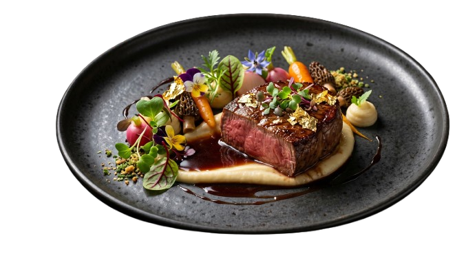
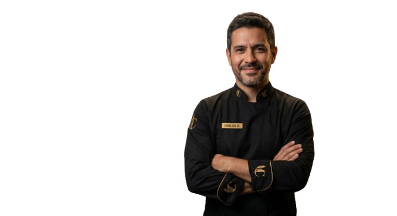

Bodas al Aire Libre

Eventos Corporativos

Celebraciones Premium
Llevamos la alta cocina a tu evento. Diseño de menú personalizado, servicio impecable y sabores que cautivan.

Nacimos en el corazón de Cipolletti con una misión clara: transformar cada celebración en un hito gastronómico. Lo que comenzó como un pequeño emprendimiento familiar de pastelería artesanal, evolucionó gracias a nuestra dedicación por la técnica y la selección de materias primas de excelencia.
Hoy, Sabores Catering es sinónimo de elegancia y buen gusto en la Patagonia, fusionando la tradición de los sabores locales con la vanguardia de la cocina internacional.

Nos adaptamos a la magnitud y estilo de tu celebración.
Recepciones elegantes, cenas de pasos y mesas dulces espectaculares para tu gran día.
Coffee breaks, almuerzos ejecutivos y cocktails de fin de año para tu empresa.
Cumpleaños, aniversarios y reuniones familiares con propuestas de finger food y tapeo.